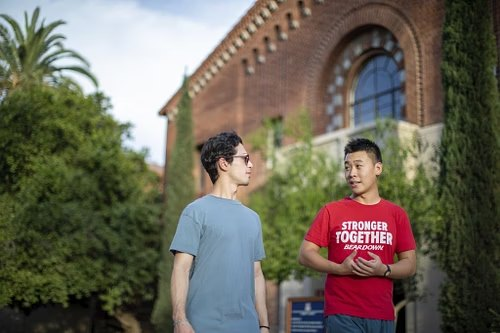
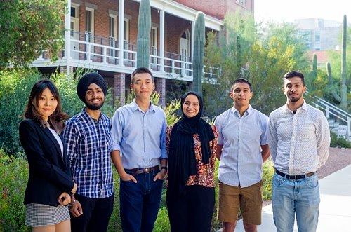

Yifan
(Zach) Wei
I work with data end to end: finding what it says, building the systems that move it, and automating the work around it.
Since 2022 I’ve done this in food distribution pricing, global IT operations at Tencent, education, and nonprofits. I’m finishing an MS in Data Science at Northeastern University in December 2026.
Pick the side of my work you’re hiring for
Data Analytics
Turning raw data into findings a team can act on: segmentation, churn and retention, dashboards, and clear recommendations.
Data Engineering & Automation
Building pipelines that run on their own: ETL, API integrations, log processing, and scripts that remove repetitive work.
AIOps & AI Automation
Putting LLMs and automation to work on real operations: alert triage, inventory systems, and reusable AI agent workflows.
AI Product
Taking AI products from user problem to launch: scoping, prototyping fast, working with stakeholders and vendors, and measuring whether it helped.
About me
Builder
I like taking a system from idea to production. At Tencent I was technical lead on a company-wide inventory system, from choosing the vendor to launch.
AI-first
I work with AI coding tools every day and check everything they produce before it ships. Speed matters, and so does getting it right.
Global mindset
Seven years in the U.S. as an international student and professional. I work comfortably across cultures, in English and Chinese.
Outside work
Hiking, skiing, competitive table tennis, and volunteering, including serving my community through my church.


Experience at a glance
- Jun 2026 – presentAIOps Platform Engineer Intern Tencent AmericasPalo Alto, CA
- Sep – Dec 2025Analytics Engineer Intern Tencent AmericasPalo Alto, CA
- Jul 2023 – Jul 2024Pricing Analyst Shamrock Foods CompanyPhoenix, AZ
- Aug – Dec 2022Tech Project Assistant University of ArizonaTucson, AZ
- Jun – Aug 2022Data Specialist Curriculum AssociatesTucson, AZ
- Apr 2022 – May 2023Jr. Data Analyst University of Arizona Basic Needs CenterTucson, AZ
Education
Northeastern University
MS in Data Science
The University of Arizona
BS in Business Administration, Management Information Systems
What people say
“Zach is an exceptional person; friendly, inquisitive, outgoing, intelligent, and considerate of others. He is respected by faculty and peers alike and deals with the pressures of being a high-profile student with grace and humility.”
“I firmly believe Zach has the qualities and determination necessary to excel in the dynamic data science industry.”
“Zach is hard-working and organized, and his positive attitude was consistently seen by the other staff from the Basic Needs Center, Campus Pantry, and Campus Closet team.”